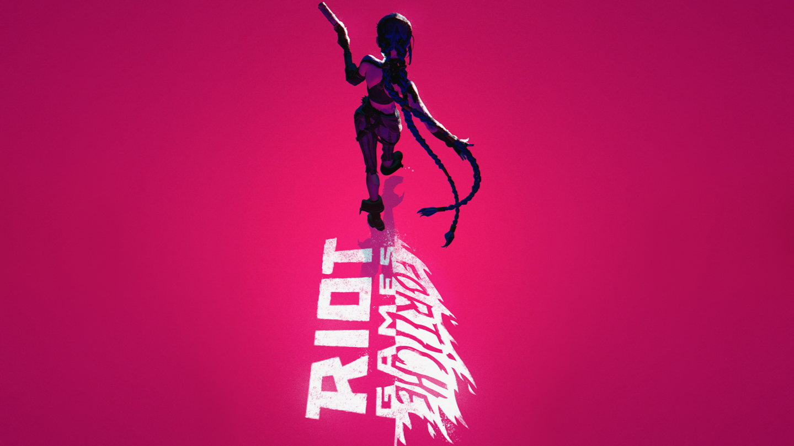
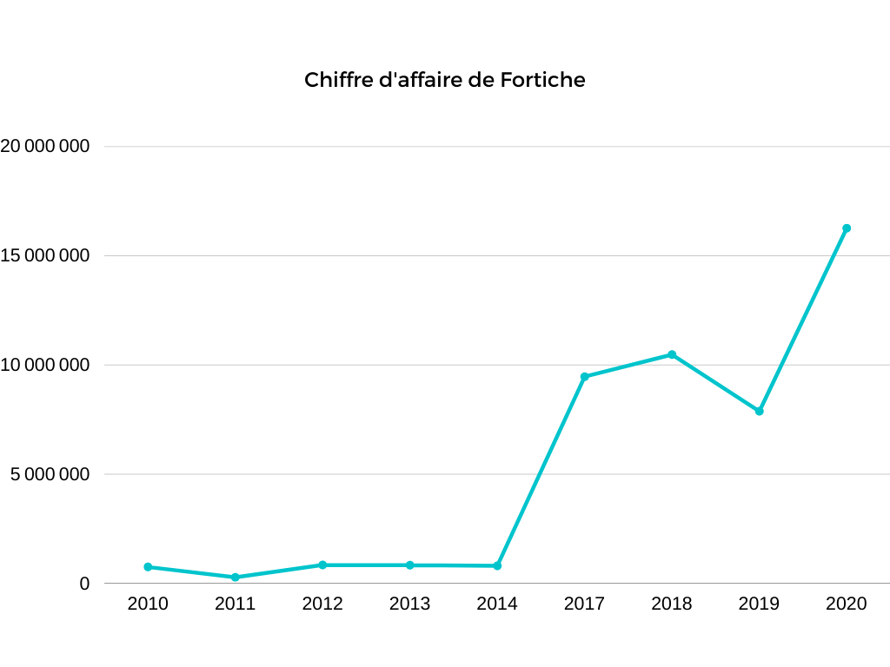

Dans ses premières années il n’y a pas d’informations sur ses économies mais en 2010, Fortiche a un capital propre de -76 700€. On peut expliquer que ce déficit a été causé par le fait qu’ils n’aient produit que des extraits publicitaires. L’année suivante son capital propre remonte a -57 300€ et en 2012 son capital propre devient positif pour atteindre 107 400€. On peut expliquer ce phénomène par la sortie des clips musicaux qu’ils ont produit.
Pour pouvoir financer ses projets, Fortiche a du trouver de l’argent. Ainsi Fortiche c’est endetté à hauteur de 136 000€ en 2010 et arrive a 262 700€ de dettes pour redescendre a 161 700€ en 2012 grâce à la sortie de leurs projets de clips musicaux. En terme d’effectif, celui-ci est inconnu entre la création de l’entreprise et son développement. Cependant en 2014, l’effectif moyen était de 12 personnes.
Donc même si les débuts ont été difficile, Fortiche, grâce a leurs travail et les collaborations, ont réussi a rester constant grâce à leurs réalisations publicitaires et a su remonter la pente grâce a la sortie de ses projets et ainsi se développer encore plus dans les années suivantes. Avant que Riot Games n’investisse sur Fortiche il n’y a pas eu d’investisseur qui a été si notable que ce géant du jeux vidéo. En Effet quand Riot Games a investis dans Fortiche cela a été très bénéfique pour cette entreprise.

L'impact de
Riot Games
Riot Games, voulant développer l’aspect visuel de son jeu far avec des animations pour la présentation de personnages par exemple, s’est donc rapproché de Fortiche en 2013 alors que l’entreprise était présente depuis seulement 2009. C’est le début d’une longue collaboration qui va permettre à Fortiche de grandir. Fortiche a donc énormément travailler avec Riot Games sur League Of Legends. Fortiche a également travaillé pour eux de manière non direct avec la réalisation de clips musicaux comme RISE et POP/STARS en 2018 ou Warriors (2014) et Enemy (2021) tout deux de Imagine Dragons.
De plus une série de très grande ampleurs à vue le jour sous le nom de « Arcane » se basant sur le jeu « League Of Legends ». La production de cette série, qui débute en 2016, a nécessité de passer de 20~30 collaborateurs à près de 500. C’est le plus gros projet de Fortiche à ce jour. Une première scène avait été proposée à Riot Games pour la création de la série, cette scène à coûté à Fortiche plus de 65 000$. Il a donc fallu adapter les locaux à un ensemble de 3 étages pour accueillir les 80 animateurs et la douzaine de storyboarders.

Le futur de Fortiche
Fortiche est une entreprise avec plein de promesses, et beaucoup d’espérances sont attendues par les spectateurs. L’avenir est prometteur et c’est pour cela que nous portons aux futurs projets de l'entreprise un regard attentif mais surtout intéressé. En raison du succès connu par Arcane sur la plateforme Netflix, l’entreprise met la barre haute et ne doit donc pas nous décevoir s’il elle souhaite conserver son succès vers le public.
L’année prochaine, Fortiche célébrera avec son fidèle partenaire Riot leurs dix ans de collaboration, leur union symbolise la confiance et les ambitions partagées au sein des deux collectifs. Ainsi, ils collaborent actuellement sur la production de la deuxième saison de la célèbre série télévisée d’animation : Arcane. Il ne s’agit pas ici de leur seul fruit issu de leur collaboration. A venir, nous aurons droit à d’autres projets (annexe) de leur part.
Malgré ça, c’est bel et bien le projet d’Arcane qui demeure le plus attendu en raison du succès récompensé de la série par les 9 Annie Awards en raison du succès connu sur Netflix. Et nous pouvons donc voir que la valeur ajoutée de l'entreprise semble être sur une pente montante, ce qui nous donne de bons espoirs pour le futur.